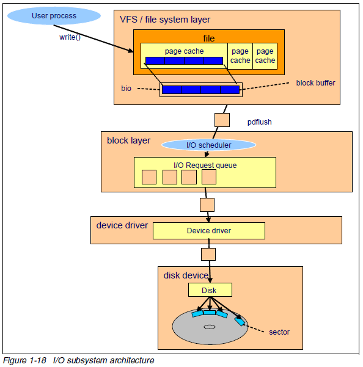
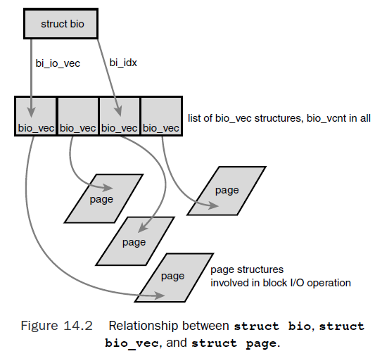
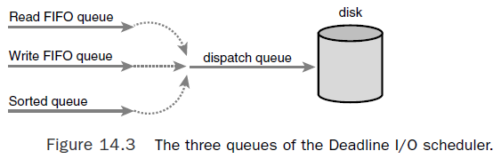

Block devices are hardware devices distinguished by the random (that is, not necessarily sequential) access of fixed-size chunks of data. The fixed-size chunks of data are called blocks.
The most common block device is a hard disk
The difference between block device and charactor device comes down to whether the device accesses data randomly. In other words, whether the device can seek to one position from another.
Managing block devices in the kernel requires more care, preparation, and work than managing character devices. Character devices have only one position—the current one—whereas block devices must be able to navigate back and forth between any location on the media. Indeed, the kernel provide an entire subsystem to manage block devices, partly because of the complexicity of block devices, and partly because we want to getting every last drop of performance from block devices.
Sector is a pyhsical proerpty of a device. Block a software concept in kernel.
The smallest addressable unit on a block device is a sector. Sectors come in various powers of two, but 512 bytes is the most common size.The sector size is a physical property of the device.
Software imposes its own smallest logically addressable unit, which is the block. The kernel performs all disk operations in terms of blocks.
Overview

write() system call.pdflush kernel thread takes care of flushing the page cache to disk.buffer_headWhen a block is stored in memory — say, after a read or pending a write — it is stored in a
buffer. Each buffer is associated with exactly one block. The buffer serves as the object that
represents a disk block in memory. It is called a buffer head and is
of type struct buffer_head.The buffer_head structure holds all the information that the
kernel needs to manipulate buffers and is defined in <linux/buffer_head.h>.
struct buffer_head {
unsigned long b_state; /* buffer state flags */
struct buffer_head *b_this_page; /* list of page’s buffers */
struct page *b_page; /* associated page */
sector_t b_blocknr; /* starting block number */
size_t b_size; /* size of mapping */
char *b_data; /* pointer to data within the page */
struct block_device *b_bdev; /* associated block device */
bh_end_io_t *b_end_io; /* I/O completion */
void *b_private; /* reserved for b_end_io */
struct list_head b_assoc_buffers; /* associated mappings */
struct address_space *b_assoc_map; /* associated address space */
atomic_t b_count; /* use count */
};
The b_state field specifies the state of this particular buffer. It can be one or more of
the flags defined in the bh_state_bits enumeration in <linux/buffer_head.h>.
The b_count field is the buffer’s usage count. Before manipulating a buffer head, you must increment its reference count via get_bh() to ensure that the buffer head is not deallocated out from under you.
The purpose of a buffer head is to describe the mapping between the on-disk block and the physical in-memory buffer. Acting as a descriptor of this buffer-to-block mapping is the data structure’s only role in the kernel.
b_blocknr.b_page.
b_data is a pointer directly to the block (that exists somewhere in b_page), which is b_size bytes in length. Therefore, the block is located in memory starting at address b_data and ending at address (b_data + b_size).bio structureThe basic container for block I/O within the kernel is the bio structure, defined in <linux/bio.h>. Each block I/O request is represented by a bio structure.
This structure represent a block I/O request that are in flight (active) as a list of segments.
bio_vec structures (bi_io_vec field).bio structure provides the capability for the kernel to perform block I/O operations of even a single buffer from multiple locations in memory.
bio structure and split it among the multiple hard drives in the RAID array. All the RAID driver needs to do is copy the bio structure and update the bi_idx field to point to where the individual drive should start its operation.struct bio {
sector_t bi_sector; /* associated sector on disk */
struct bio *bi_next; /* list of requests */
struct block_device *bi_bdev; /* associated block device */
unsigned long bi_flags; /* status and command flags */
unsigned long bi_rw; /* read or write? */
unsigned short bi_vcnt; /* number of bio_vecs off */
unsigned short bi_idx; /* current index in bi_io_vec */
unsigned short bi_phys_segments; /* number of segments */
unsigned int bi_size; /* I/O count */
unsigned int bi_seg_front_size; /* size of first segment */
unsigned int bi_seg_back_size; /* size of last segment */
unsigned int bi_max_vecs; /* maximum bio_vecs possible */
unsigned int bi_comp_cpu; /* completion CPU */
atomic_t bi_cnt; /* usage counter */
struct bio_vec *bi_io_vec; /* bio_vec list */
bio_end_io_t *bi_end_io; /* I/O completion method */
void *bi_private; /* owner-private method */
bio_destructor_t *bi_destructor; /* destructor method */
struct bio_vec bi_inline_vecs[0]; /* inline bio vectors */
};
The most important fields are bi_io_vec, bi_vcnt, and bi_idx. Figure 14.2 shows the
relationship between the bio structure and its fields.

Each bio_vec is treated as a vector of the form <page, offset, len>, which describes a specific segment. The full array of these vectors describes the entire buffer.
The bio_vec structure is defined in <linux/bio.h>:
struct bio_vec {
struct page *bv_page; /* pointer to the physical page on which this buffer resides */
unsigned int bv_len; /* the length in bytes of this buffer */
unsigned int bv_offset; /* the byte offset within the page where the buffer resides */
};
buffer_head and biobio structure represents an I/O operation, which may include one or more pages in memory.buffer_head structure represents a single buffer, which describes a single block on the disk.buffer_heads function as descriptors, mapping disk blocks to pages. The bio structure does not contain any information about the state of a buffer—it is simply an array of vectors describing one or more segments of data for a single block I/O operation, plus related information.
Block devices maintain request queues to store their pending block I/O requests.The
request queue is represented by the request_queue structure and is defined in
<linux/blkdev.h>.
The request queue contains a doubly linked list of requests, of type struct request, also defined in <linux/blkdev.h>.
bio structure because individual requests can operate on multiple consecutive disk blocks.the kernel does not issue block I/O requests to the disk in the order they are received or as soon as they are received because the slow disk seek (each seek - positioning the hard disk's head at the specific block - takes milliseconds).
Kernel uses I/O Scheduler (a totally differnet kernel sub-system than process scheduler) to manage a block device's request queue with the goal of reducing seeks. It decides the order of requests in the queue and at what time each request is dispatched to the block device. This is critical in whole system's performance.
I/O schedulers perform two primary actions to minimize seeks: merging and sorting.
It was the default I/O scheduler in 2.4 (deprecated in 2.6). The Linus elevator is implemented in <block/elevator.c>.
When a new request is added to the queue, below 4 steps are done in order:
Unfortunately, the step 2 “age” check is not efficient. It does not provide any real attempt to service requests in a given timeframe; it merely stops insertion-sorting requests after a suitable delay.This improves latency but can still lead to request starvation, which was the big must-fix of the 2.4 I/O scheduler.
Code in block/cfq-iosched.c, It is now the default I/O scheduler in Linux (not true anymore after v5 kernel).
The CFQ I/O scheduler assigns incoming I/O requests to specific queues based on the process originating the I/O request, ie. there is one queue for each process submitting I/O. Within each queue, requests are coalesced with adjacent requests and insertion sorted.
The CFQ I/O scheduler then services the queues round robin, plucking a configurable number of requests (by default, four) from each queue before continuing on to the next.This provides fairness at a per-process level, assuring that each process receives a fair slice of the disk’s bandwidth.
It is recommended for desktop workloads, although it performs reasonably well in nearly all workloads without any pathological corner cases.
Each request is associated with an expiration time. By default, the expiration time is 500 milliseconds in the future for read requests and 5 seconds in the future for write requests.

it maintains a request queue sorted by physical location on disk. It calls this queue the sorted queue. It performs merging and insertion on this queue.
It also maintains two FIFO queue. Read requests are sorted into a read FIFO queue, and write requests are inserted into a write FIFO queue. Both FIFO queue are basically time sorted.
The scheduler decides on the next request by first deciding which queue to use.
The Deadline I/O Scheduler prevents request starvation. Because read requests are given a substantially smaller expiration value than write requests, the Deadline I/O scheduler also works to ensure that write requests do not starve read requests.
Code in block/deadline-iosched.c.
Anticipatory I/O scheduler starts with the Deadline I/O scheduler as its base, with three queues and expirations for each queue. The major change is the addition of an anticipation heuristic.
When a read request is issued, it is handled as usual, within its usual expiration period. After the request is submitted, however, the Anticipatory I/O scheduler does not immediately seek back and return to handling other requests. Instead, it does absolutely nothing for a few milliseconds (configurable, default is six milliseconds).If the request comes in the waiting period, the disk head is in the correct location, and the request is serviced very quickly.
It is ideal for servers (like Apache web server), although it performs poorly on certain workloads involving databases.
Code in block/as-iosched.c
Performs merging of I/O requests but no sorting. Good for random access devices (flash, ramdisk, etc) and for devices that sort I/O requests such as advanced storage controllers.
Code in block/noop-iosched.c
In Red Hat Enterprise Linux 8 (kernel v5), block devices support only multi-queue scheduling. This enables the block layer performance to scale well with fast solid-state drives (SSDs) and multi-core systems.
The traditional, single-queue schedulers, which were available in Red Hat Enterprise Linux 7 and earlier versions, have been removed.
similar to deadline
bfq is based on cfq code. It does not grant the disk to each process for a fixed time slice but assigns a budget measured in number of sectors to the process.
The bfq scheduler ensures that a single application is never using all of the bandwidth. In effect, the storage device is always as responsive as if it was idle. In its default configuration, bfq focuses on delivering the lowest latency rather than achieving the maximum throughput.
It targets desktop systems and interactive tasks. This scheduler is suitable while copying large files and the system does not become unresponsive in this case.
The scheduler tunes itself to achieve a latency goal by calculating the latencies of every I/O request submitted to the block I/O layer. You can configure the target latencies for read, in the case of cache-misses, and synchronous write requests.
This scheduler is suitable for fast devices, for example NVMe, SSD, or other low latency devices.
Depending on the task that your system performs, the following disk schedulers are recommended as a baseline prior to any analysis and tuning tasks:
| Use case | Disk scheduler |
|---|---|
| Traditional HDD with a SCSI interface | Use mq-deadline or bfq. |
| High-performance SSD or a CPU-bound system with fast storage | Use none, especially when running enterprise applications. Alternatively, use kyber. |
| Desktop or interactive tasks | Use bfq. |
| Virtual guest | Use mq-deadline. With a host bus adapter (HBA) driver that is multi-queue capable, use none. |
By default, block devices use the Complete Fair Queuing I/O scheduler.This can be overridden via the boot-time option elevator=foo on the kernel command line, where foo is a valid and enabled I/O Scheduler.
A second way to change the I/O scheduler is on the fly. For example, you can determine which I/O scheduler is being used by looking at the /sys/block/[device]/queue/scheduler file, where [device] is the name of the device. For example, on my laptop, the command
root@laytonjb-laptop:~# cat /sys/block/sdb/queue/scheduler
noop anticipatory deadline [cfq]
shows that the current I/O scheduler (in square brackets) is cfq. To change the scheduler, just echo the name of the desired scheduler:
root@laytonjb-laptop:~# echo deadline > /sys/block/sdb/queue/scheduler
root@laytonjb-laptop:~# cat /sys/block/sdb/queue/scheduler
noop anticipatory [deadline] cfq
Each I/O scheduler has a default set of tunable options that may be adjusted to help improve performance or fair sharing for your particular use case. The following kernel documentation covers these per-I/O scheduler tunable options:
deadline (and mq-deadline) deadline-iosched.txt
cfq cfq-iosched.txt
bfq bfq-iosched.txt
kyber kyber-iosched.txt